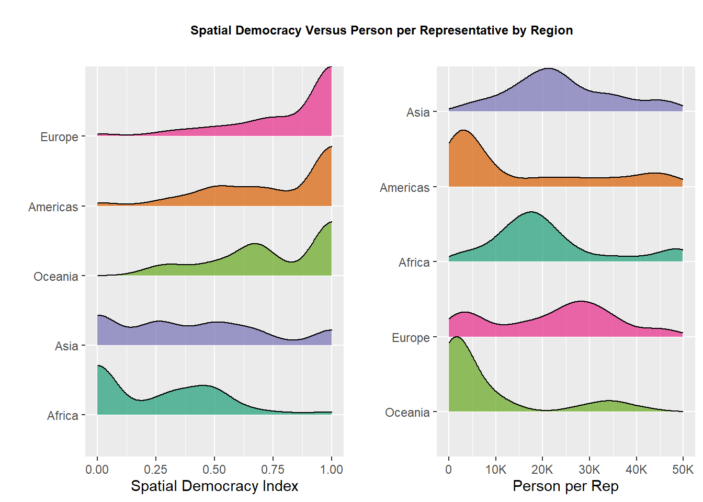
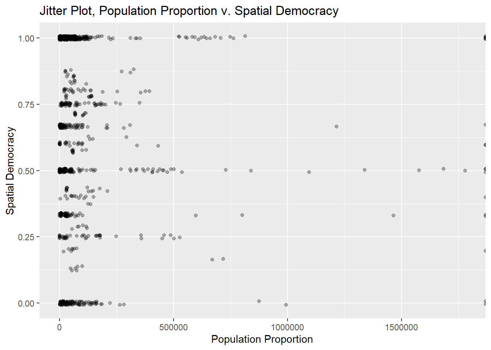
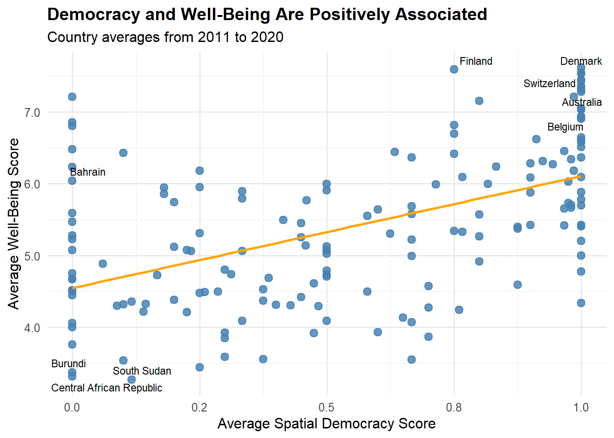
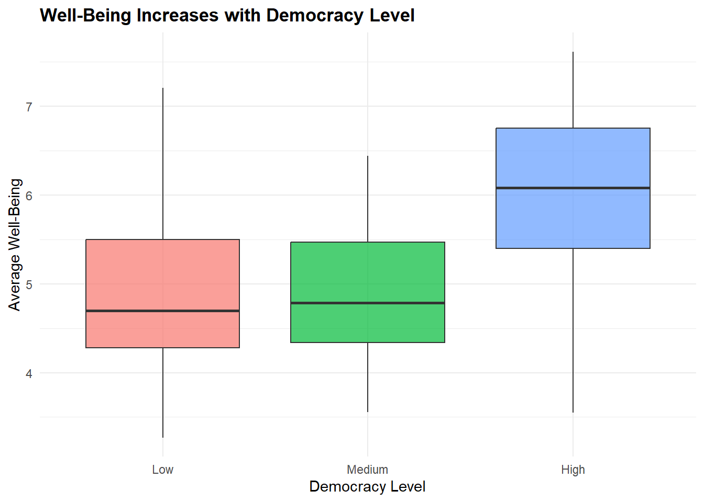

Code
install.packages("tidytuesdayR")install.packages("tidytuesdayR")library(tidytuesdayR)
tuesdata <- tidytuesdayR::tt_load('2024-11-05')
library(tidyverse)dem_df<- tuesdata$democracy_data
head(dem_df)# A tibble: 6 × 43
country_name country_code year regime_category_index regime_category
<chr> <chr> <dbl> <dbl> <chr>
1 Afghanistan AFG 1950 5 Royal dictatorship
2 Afghanistan AFG 1951 5 Royal dictatorship
3 Afghanistan AFG 1952 5 Royal dictatorship
4 Afghanistan AFG 1953 5 Royal dictatorship
5 Afghanistan AFG 1954 5 Royal dictatorship
6 Afghanistan AFG 1955 5 Royal dictatorship
# ℹ 38 more variables: is_monarchy <lgl>, is_commonwealth <lgl>,
# monarch_name <chr>, monarch_accession_year <dbl>, monarch_birthyear <dbl>,
# is_female_monarch <lgl>, is_democracy <lgl>, is_presidential <lgl>,
# president_name <chr>, president_accesion_year <dbl>,
# president_birthyear <dbl>, is_interim_phase <lgl>,
# is_female_president <lgl>, is_colony <lgl>, colony_of <chr>,
# colony_administrated_by <chr>, is_communist <lgl>, …This is a dataset made avaiable through TidyTuesdayR. It contains information from 1955 to 2020 about the geopolitical structure of every country in the world. Example variables include is_democracy, regime_category_index, and is_communist. The collection of this data has largely been ongoing, but I believe was compiled fairly recently. This kind of data is usually easily attainable because most variables are yes/no questions such as, “Was this country a democracy?”. Each observational unit is a combination of country and year, so e.g. Albania 1962. This is a very interesting dataset because with the presence of variables such as that give scores to a country’s democracy, hold the number of representatives, and even test if they have free and fair elections, you can make some really interesting conclusions about what we consider as some of the most sacred aspects of a society. For example, an idea that we have is testing a relationship with democracy index vs. total representation to test the long held and intuitive belief that more representation per person leads to better democracies. Democracy index is a number from 0 to 10 that intends to quantify how evenly democratic power is spread across different people within a nation. For example, the United States having a senate that gives each state the same number of representatives is something that will take away from its democracy index. Some countries that are labeled as democracies have democracy indices of 0, which is something we tried to understand, but could never fully come to a solid explanation for.
library(httr)
library(tidyjson)
library(jsonlite)
library(tidyverse)
library(glue)
library(readxl)
library(ggrepel)
library(broom)
library(scales)
library(knitr)base_url <- "https://api.api-ninjas.com/v1/population"
api <- Sys.getenv("API_NINJAS_KEY")This data has a list of countries along with their population every year.
get_pop_data <- function(country) {
country_url <- glue("{base_url}?country={URLencode(country)}")
countries <- GET(country_url, add_headers("X-Api-Key" = api))
tx <- content(countries, "text", encoding = "UTF-8")
if (tx==""){
return(NA)
}
countries_data <- fromJSON(tx)
if(is.null(countries_data$historical_population)) {
return(NULL)
}
countries_data <- countries_data$historical_population %>%
mutate(country = country)
return(countries_data)
}#|eval: false
pop_data <- map(unique(dem_df$country_name), .f = get_pop_data)saveRDS(pop_data,"pop_data.rds")pop_data <- read_rds("pop_data.rds")clean_df <- pop_data %>%
keep(~ length(.x)>0) %>%
map(~.x %>% select(country, year,population)) %>%
bind_rows()dem2_df <- dem_df %>%
filter(year>=1955 & year%%5==0)%>%
rename(country = "country_name")clean2_df <- clean_df %>%
filter(year%%5==0) %>%
arrange(country, year)final_df <- left_join(dem2_df, clean2_df, by = c("country", "year"))final_df <- final_df %>%
filter(is_democracy==TRUE)%>%
mutate(pop_prop = population/rowSums(cbind(upper_house_members,lower_house_members, third_house_members), na.rm=TRUE))
head(final_df[c("country", "year", "population","pop_prop")])# A tibble: 6 × 4
country year population pop_prop
<chr> <dbl> <int> <dbl>
1 Albania 1995 3258567 23275.
2 Albania 2000 3166148 20427.
3 Albania 2005 3076159 21973.
4 Albania 2010 2928722 20919.
5 Albania 2015 2898632 20705.
6 Albania 2020 2871954 20514.This is a combined dataset, comprised of the first dataset mentioned and a dataset that contains the historical population of every country. This historical population dataset was available through API Ninjas, and was accessed using the “httr” package. This data was collected every five years since 1955, and is widely accessible through public historical population records. This data was of interest to us because making conclusions about the efficacy of representation is not really useful without some adjusting for population. For example, a country like china may have a lot of representatives but this could be disanalogous with their democracy quality because of the fact that China is the most populated country in the world.
happiness <- read_csv("whr_data.csv")New names:
Rows: 2116 Columns: 28
── Column specification
──────────────────────────────────────────────────────── Delimiter: "," chr
(1): Country name dbl (12): Year, Rank, Life evaluation (3-year average), Lower
whisker, Upper... lgl (15): ...14, ...15, ...16, ...17, ...18, ...19, ...20,
...21, ...22, ......
ℹ Use `spec()` to retrieve the full column specification for this data. ℹ
Specify the column types or set `show_col_types = FALSE` to quiet this message.
• `` -> `...14`
• `` -> `...15`
• `` -> `...16`
• `` -> `...17`
• `` -> `...18`
• `` -> `...19`
• `` -> `...20`
• `` -> `...21`
• `` -> `...22`
• `` -> `...23`
• `` -> `...24`
• `` -> `...25`
• `` -> `...26`
• `` -> `...27`
• `` -> `...28`# I'm not sure why there are empty columns beyond those we are using, the file very clearly only had 13 columns. I don't think this should be an issue, but we're not gonna be using that whole dataset anyway.happiness_clean <- happiness %>%
select(
country_name = `Country name`,
year = Year,
well_being = `Life evaluation (3-year average)`)
#find the years that both this data set and the dem_df covers, and then we'll filter the sets to match those years
range(happiness_clean$year, na.rm = TRUE) # since 2011[1] 2011 2025range(dem_df$year, na.rm = TRUE) # 1950 to 2020[1] 1950 2020dem_overlap <- dem_df %>%
filter(year >= 2011)
happiness_overlap <- happiness_clean %>%
filter(year <= 2020)
# now we merge them into one data frame
#hdiXdem_df <- dem_overlap %>%
#left_join(happiness_overlap, by = c("country_name", "year"))
# this will weed out the countries that we weren't able to directly match by name
# hdiXdem_df %>%
# filter(is.na(well_being)) %>%
# distinct(country_name) %>%
# arrange(country_name)
# so that gave 208 countries which surprised me because the names looked the same to me. this makes me believe i messed up on the joining of the dataframes.
# i'm gonna try the join again, only based off name, not year as well
# hdiXdem_df <- dem_overlap %>%
# left_join(happiness_overlap, by = "country_name")
# okay that isn't what we want either, that gives us a many to many dataframe, which is bad, so what I'll do is take the average of the happiness index and democracy index across the years and compare those. For reference, we don't want the many to many dataframe because it has 13010 rows.
# average of both data frames
avg_dem <- dem_overlap %>%
group_by(country_name) %>%
summarize(avg_democracy = mean(spatial_democracy, na.rm = TRUE))
avg_happiness <- happiness_overlap %>%
group_by(country_name) %>%
summarize(avg_well_being = mean(well_being, na.rm = TRUE))
# new dataframe
hdiXdem_df <- avg_dem %>%
left_join(avg_happiness, by = "country_name")
# now check again for unmatched countries
hdiXdem_df %>%
filter(is.na(avg_well_being)) %>%
distinct(country_name) %>%
arrange(country_name)# A tibble: 60 × 1
country_name
<chr>
1 Anguilla
2 Antigua and Barbuda
3 Aruba
4 Bahamas
5 Barbados
6 Bermuda
7 British Virgin Islands
8 Brunei
9 Cape Verde
10 Cayman Islands
# ℹ 50 more rows#so that gives us 60 countries that are not in our happiness set that are in the democracy set. What we'll do now is use anti_join to see what countries are in the democracy set that are not in the happiness set, and vice versa.
dem_not_happy <- anti_join(avg_dem, avg_happiness, by = "country_name")
happy_not_dem <- anti_join(avg_happiness, avg_dem, by = "country_name")
nrow(dem_not_happy)[1] 60nrow(happy_not_dem)[1] 19head(dem_not_happy, 20)# A tibble: 20 × 2
country_name avg_democracy
<chr> <dbl>
1 Anguilla 1
2 Antigua and Barbuda 1
3 Aruba 0.833
4 Bahamas 0.6
5 Barbados 1
6 Bermuda 1
7 British Virgin Islands 1
8 Brunei 1
9 Cape Verde 0.7
10 Cayman Islands 0.5
11 Congo, Dem. Rep. 0.144
12 Congo, Republic of 0
13 Cook Islands 1
14 Curacao 0.75
15 Czech Republic 1
16 Côte d`Ivoire 0.64
17 Dominica 1
18 Equatorial Guinea 0
19 Eritrea 0
20 Fiji 0.75 happy_not_dem# A tibble: 19 × 2
country_name avg_well_being
<chr> <dbl>
1 Congo 4.50
2 Czechia 6.64
3 Côte d’Ivoire 4.51
4 DR Congo 4.33
5 Gambia 4.77
6 Hong Kong SAR of China 5.47
7 Kosovo 5.71
8 Lao PDR 4.88
9 North Cyprus 5.67
10 Republic of Korea 5.89
11 Republic of Moldova 5.70
12 Russian Federation 5.64
13 Slovakia 6.09
14 Somaliland Region 4.91
15 State of Palestine 4.67
16 Taiwan Province of China 6.36
17 Trinidad and Tobago 6.23
18 Türkiye 5.30
19 Viet Nam 5.28# after looking through it, it seems that the countries that were in dem_not_happy were a lot of small, island based nation states that don't necessarily need to be included for this to be a fair comparison. The countries in happy_not_dem were all countries with names that may be different between the two sets. these are the countries we will recode. Using my own imperfect analysis, I have chosen the countries I will use from this list of unmatched country names, and I will use this to find the names for those countries in the democracy df
avg_dem %>% filter(str_detect(country_name, "Korea|Mold|Congo|Trinidad|Hong|Palest|Taiwan|Turkey|Czech|Gambia|Slov"))# A tibble: 13 × 2
country_name avg_democracy
<chr> <dbl>
1 Congo, Dem. Rep. 0.144
2 Congo, Republic of 0
3 Czech Republic 1
4 Gambia, The 1
5 Hong Kong 0
6 Korea, People's Republic 0.333
7 Korea, Republic of 0.333
8 Moldova 1
9 Slovak Republic 1
10 Slovenia 0.975
11 Taiwan 0.667
12 Trinidad &Tobago 0.833
13 Turkey 0.625# now that we know the names of all the countries that we want in both data sets, I will fix the happiness dataset to match the names from the democracy set, and then we will use an inner join to only get the countries that we want.
country_fix_happiness <- c(
"Congo" = "Congo, Republic of",
"Czechia" = "Czech Republic",
"Côte d’Ivoire" = "Ivory Coast",
"DR Congo" = "Congo, Dem. Rep.",
"Gambia" = "Gambia, The",
"Hong Kong SAR of China" = "Hong Kong",
"Lao PDR" = "Laos",
"Republic of Korea" = "Korea, Republic of",
"Republic of Moldova" = "Moldova",
"Russian Federation" = "Russia",
"Slovakia" = "Slovak Republic",
"State of Palestine" = "Palestine",
"Taiwan Province of China" = "Taiwan",
"Trinidad and Tobago" = "Trinidad &Tobago",
"Türkiye" = "Turkey",
"Viet Nam" = "Vietnam")
avg_happiness_fixed <- happiness_overlap %>%
mutate(country_name = recode(country_name, !!!country_fix_happiness)) %>%
group_by(country_name) %>%
summarize(avg_well_being = mean(well_being, na.rm = TRUE), .groups = "drop")
hdiXdem_df <- avg_dem %>%
inner_join(avg_happiness_fixed, by = "country_name")
head(hdiXdem_df)# A tibble: 6 × 3
country_name avg_democracy avg_well_being
<chr> <dbl> <dbl>
1 Afghanistan 0.25 3.44
2 Albania 0.8 4.92
3 Algeria 0.45 5.45
4 Angola 0.225 4.21
5 Argentina 0.98 6.33
6 Armenia 0.375 4.52This final dataset was read in through a csv file accessed through the World Bank website. It contains the Human Development Indexes of every country. HDI is a rough measurement of the quality of life in countries, broken down into three main measurements; years of education, life expectancy, and gross national income. This was of great use because we wanted to see the connection between the spatial democracy index and happiness index of a country. We wanted to do this because this could help us with a greater connection between greater representation and the happiness/well-being of a country.
Research Question 1: Is there a significant relationship between spatial democracy index and population adjusted representation (people per representative)?
Research Question 2: Is there a significant relationship between spatial democracy index and happiness development index?
democracy_data <- tuesdata$democracy_data
countries <- unique(democracy_data$country_name)
total_reps <- numeric(length(countries))
for (i in seq_along(countries)) {
this_country <- countries[i]
total_reps[i] <- sum(
democracy_data$lower_house_members[democracy_data$country_name == this_country],
na.rm = TRUE)}
country_rep_summary <- data.frame(
country_name = countries,
total_lower_house_members = total_reps)
country_rep_summary <- country_rep_summary[order(-country_rep_summary$total_lower_house_members), ]
knitr::kable(
head(country_rep_summary, 20),
col.names = c("Country", "Total Lower House Members"),
caption = "Total lower house members by country")| Country | Total Lower House Members | |
|---|---|---|
| 40 | China | 122260 |
| 107 | Libya | 94678 |
| 154 | Russia | 49915 |
| 192 | Turkmenistan | 46626 |
| 198 | United Kingdom | 45567 |
| 91 | Italy | 44192 |
| 70 | Germany | 39582 |
| 66 | France | 39273 |
| 98 | Korea, People’s Republic | 38419 |
| 85 | India | 37213 |
| 93 | Japan | 34591 |
| 191 | Turkey | 34052 |
| 149 | Poland | 32468 |
| 205 | Vietnam | 31019 |
| 26 | Brazil | 30918 |
| 199 | United States | 30893 |
| 86 | Indonesia | 29684 |
| 153 | Romania | 27768 |
| 49 | Cuba | 25949 |
| 121 | Mexico | 24739 |
dem_index<-read.csv("https://raw.githubusercontent.com/egregi0us/political-system-analysis/refs/heads/main/democracy-index-eiu.csv")
dem_index2<-dem_index %>%
rename(country = "Entity")%>%
rename(year="Year")%>%
filter(year>2006 & year%%5==0)finalest_df <- final_df %>%
filter(!pop_prop == Inf)finalestest_df <- left_join(finalest_df, dem_index2, by = c("country","year"))finalestest_df<- finalestest_df %>%
filter(year>2005)%>%
filter(!is.na(Democracy.Index))
head(finalestest_df)# A tibble: 6 × 48
country country_code year regime_category_index regime_category is_monarchy
<chr> <chr> <dbl> <dbl> <chr> <lgl>
1 Albania ALB 2010 0 Parliamentary … FALSE
2 Albania ALB 2015 0 Parliamentary … FALSE
3 Albania ALB 2020 0 Parliamentary … FALSE
4 Argentina ARG 2010 2 Presidential d… FALSE
5 Argentina ARG 2015 2 Presidential d… FALSE
6 Argentina ARG 2020 2 Presidential d… FALSE
# ℹ 42 more variables: is_commonwealth <lgl>, monarch_name <chr>,
# monarch_accession_year <dbl>, monarch_birthyear <dbl>,
# is_female_monarch <lgl>, is_democracy <lgl>, is_presidential <lgl>,
# president_name <chr>, president_accesion_year <dbl>,
# president_birthyear <dbl>, is_interim_phase <lgl>,
# is_female_president <lgl>, is_colony <lgl>, colony_of <chr>,
# colony_administrated_by <chr>, is_communist <lgl>, …library(countrycode)
vis2 <- final_df |>
select(country, spatial_democracy, pop_prop) |>
mutate(region = countrycode(country,
origin = "country.name",
destination = "continent")) |>
filter(!pop_prop==Inf)library(cowplot)
Attaching package: 'cowplot'The following object is masked from 'package:lubridate':
stamplibrary(ggridges)
library(scales)
title_theme <- ggdraw() +
draw_label("Spatial Democracy Versus Person per Representative by Region",
fontfamily = "Courier",
fontface = "bold",
size = 9,
hjust = 0.42
)
spa_dem <- ggplot(vis2, aes(x = spatial_democracy,
y = reorder(region, spatial_democracy),
fill = region)) +
geom_density_ridges(alpha = 0.7, color = "black", scale = 1) +
scale_x_continuous(limits = c(0, 1)) +
labs(x = "Spatial Democracy Index",
y = " ") +
scale_fill_brewer(palette = "Dark2") +
guides(fill = "none")
pop_dem <- ggplot(vis2, aes(x = pop_prop,
y = reorder(region, pop_prop),
fill = region)) +
geom_density_ridges(alpha = 0.7, color = "black", scale = 1) +
scale_x_continuous(limits = c(0, 50000), labels = label_number(scale_cut = cut_short_scale())) +
labs(x = "Person per Rep",
y = " ") +
scale_fill_brewer(palette = "Dark2") +
guides(fill = "none")
gridofplots <- plot_grid(spa_dem, pop_dem, nrow = 1)Picking joint bandwidth of 0.0812Picking joint bandwidth of 3600Warning: Removed 427 rows containing non-finite outside the scale range
(`stat_density_ridges()`).plot_grid(title_theme,
gridofplots,
ncol = 1, rel_heights = c(0.2, 1.5, 0.1)
)Warning in grid.Call.graphics(C_text, as.graphicsAnnot(x$label), x$x, x$y, :
font family not found in Windows font database
final_df %>%
ggplot(aes(x=pop_prop, y = spatial_democracy))+
geom_jitter(alpha = 0.3)+
labs(
x = "Population Proportion",
y = "Spatial Democracy",
title = "Jitter Plot, Population Proportion v. Spatial Democracy"
)Warning: Removed 98 rows containing missing values or values outside the scale range
(`geom_point()`).
final_df <- final_df %>%
filter(is_democracy==TRUE)%>%
mutate(pop_prop = population/rowSums(cbind(upper_house_members,lower_house_members, third_house_members), na.rm=TRUE))
head(final_df[c("country", "year", "population","pop_prop")])# A tibble: 6 × 4
country year population pop_prop
<chr> <dbl> <int> <dbl>
1 Albania 1995 3258567 23275.
2 Albania 2000 3166148 20427.
3 Albania 2005 3076159 21973.
4 Albania 2010 2928722 20919.
5 Albania 2015 2898632 20705.
6 Albania 2020 2871954 20514.avg_dem <- function(country) {
dem_df %>%
filter(country_name == country) %>%
summarize(avg = mean(spatial_democracy, na.rm = TRUE)) %>%
pull(avg)
}
avg_df <- dem_df %>%
distinct(country_name) %>%
mutate(Average_Democracy = map_dbl(country_name, avg_dem))
head(avg_df)# A tibble: 6 × 2
country_name Average_Democracy
<chr> <dbl>
1 Afghanistan 0.130
2 Albania 0.521
3 Algeria 0.143
4 Angola 0.0951
5 Anguilla 0.972
6 Antigua and Barbuda 0.965 # Identifying which countries to label:
top_wb <- hdiXdem_df %>% slice_max(avg_well_being, n = 3, with_ties = FALSE)
low_wb <- hdiXdem_df %>% slice_min(avg_well_being, n = 3, with_ties = FALSE)
top_dem <- hdiXdem_df %>% slice_max(avg_democracy, n = 2, with_ties = FALSE)
low_dem <- hdiXdem_df %>% slice_min(avg_democracy, n = 2, with_ties = FALSE)
label_countries <- bind_rows(top_wb, low_wb, top_dem, low_dem) %>%
distinct(country_name, .keep_all = TRUE)scatter1 <- ggplot(
hdiXdem_df,
aes(x = avg_democracy, y = avg_well_being)
) +
geom_point(size = 2.8, alpha = 0.85, color = "steelblue") +
geom_smooth(method = "lm", se = FALSE, linewidth = 1, color = "orange") +
geom_text_repel(
data = label_countries,
aes(label = country_name),
size = 3,
max.overlaps = 20
) +
scale_x_continuous(labels = scales::number_format(accuracy = 0.1)) +
scale_y_continuous(labels = scales::number_format(accuracy = 0.1)) +
labs(
title = "Democracy and Well-Being Are Positively Associated",
subtitle = "Country averages from 2011 to 2020",
x = "Average Spatial Democracy Score",
y = "Average Well-Being Score"
) +
theme_minimal(base_size = 12) +
theme(
plot.title = element_text(face = "bold")
)scatter1`geom_smooth()` using formula = 'y ~ x'
hdiXdem_df %>%
mutate(
democracy_group = case_when(
avg_democracy < 0.33 ~ "Low",
avg_democracy < 0.66 ~ "Medium",
TRUE ~ "High"),
democracy_group = factor(democracy_group, levels = c("Low", "Medium", "High"))
) %>%
ggplot(aes(x = democracy_group, y = avg_well_being, fill = democracy_group)) +
geom_boxplot(alpha = 0.7) +
labs(
title = "Well-Being Increases with Democracy Level",
x = "Democracy Level",
y = "Average Well-Being"
) +
theme_minimal() +
theme(
plot.title = element_text(face = "bold"),
legend.position = "none"
)
final_df <- final_df %>%
filter(!pop_prop==Inf)rq2_model <- lm(avg_well_being ~ avg_democracy, data = hdiXdem_df)
tidy(rq2_model) %>%
mutate(
estimate = round(estimate, 3),
std.error = round(std.error, 3),
statistic = round(statistic, 3),
p.value = pvalue(p.value)
) %>%
rename(
Term = term,
Estimate = estimate,
`Standard Error` = std.error,
`t-value` = statistic,
`p-value` = p.value
) %>%
knitr::kable(
caption = "Linear regression model predicting average well-being from average spatial democracy."
)| Term | Estimate | Standard Error | t-value | p-value |
|---|---|---|---|---|
| (Intercept) | 4.547 | 0.134 | 33.929 | <0.001 |
| avg_democracy | 1.557 | 0.203 | 7.678 | <0.001 |
The linear regression results indicate a strong, statistically significant positive relationship between average spatial democracy and average well-being. The coefficient for average democracy is 1.557, meaning that for every one-unit increase in the democracy score (on a 0–1 scale), the model predicts an increase of approximately 1.56 points in a country’s average well-being score.
The p-value for this coefficient is < 0.001, providing strong evidence that this relationship is statistically significant at the 0.05 level. This suggests that the observed positive association is very unlikely to be due to random chance.
The intercept of 4.547 represents the predicted well-being score when the democracy index is zero. This value is useful in practice, as some countries we are investigating have democracy indices of zero, so it serves as a baseline for the model.
Overall, these results support the conclusion that countries with higher levels of democracy tend to exhibit higher levels of well-being, reinforcing the idea that democratic structures may be associated with improved quality of life.
However, this model does not imply causation, and other factors such as economic development or regional differences may also influence well-being.